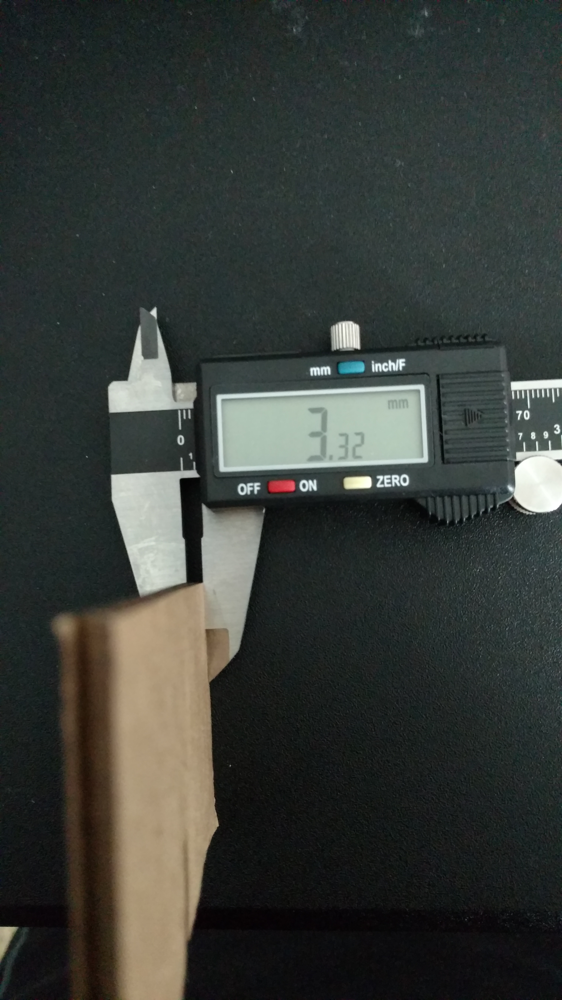
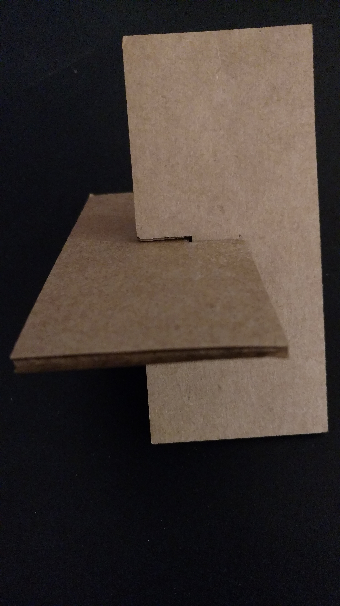
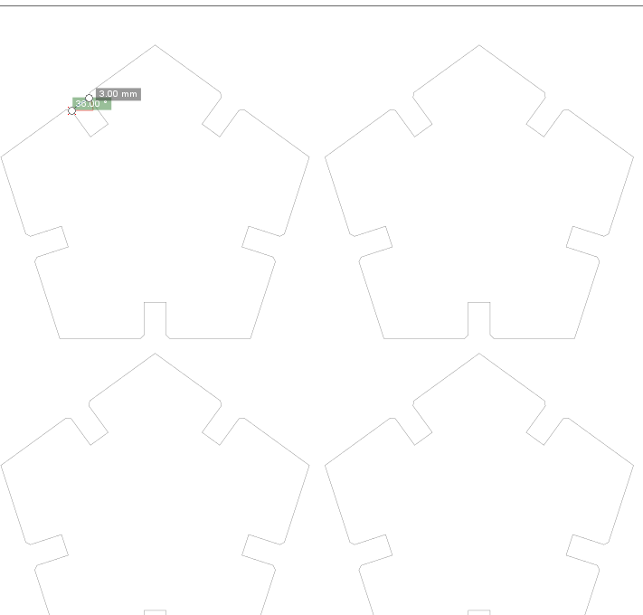

Michael Hsieh's Assignment 1!

For this assignment, we were asked to create a press fit construction kit where the parts are cut out of a material (i.e., cardboard) using a laser cutter. Additionally, the assignment required that the construction kit would hold together with light shaking. Although no direct help was required, I spent some time watching others use the laser cutter before using it myself. I also consulted online web boards/articles to troubleshoot issues I was having with measurements not matching what was set in the original vector software. I also did some consultation for ideas about part shapes to use, but created the part design parameters on my own (e.g., lengths of sides, depth of cut, angle of connection, etc.).
The general steps that I took in this assignment were:- Measure cardboard for internal/external thicknesses.
- Determine a part design to work with.
- Create a vector representation of part design.
- Use laser cutter to cut out parts from the cardboard sheet.
- Assemble parts into some kind of design that would not shake apart easily.
Measuring Cardboard for Internal/External Thicknesses
In order to ensure my eventual press fit parts would fit together, I needed to measure the thickness of my cardboard. I used a digital caliper and discovered the cardboard's thickness could vary slightly, but was around 3.32mm. I knew that my part designs would need to have slots that were around this width to accommodate the press fit. (My initial piece of cardboard that I used for testing was 4.10mm, but I ran into issues with image dimensions not being respected when laser cutting, which will be explained later on.)
Determining a Part Design to Work with
After determining the thickness of the cardboard I would be using, I tried to figure out what kind of shape I should use to create my part. I was interested in creating a DNA double-helix structure, but after viewing the documentation for its creation online, felt that it would be quite difficult for me to create something similar in the time available I had, especially since I had no idea how to calculate the angles and "advanced" slot design. I ended up settling on a ball-like design using pentagons and hexagons after viewing another webpage and another student's rather innovative design.
Creating a Vector Representation of the Part Design
Since I did not have Adobe Illustrator, I downloaded and began working with Inkscape to design some test Parts and validate the measurement that I had taken earlier. I found that Inkscape was a little difficult to work with when I wanted to set very specific geometries and measurements. The main issue I ran into working with Inkscape was that when I transferred my .svg file over to the Adobe Illustrator on the MILL's laptops, the dimensions were larger than I had set, leaving me with extremely large slots that did not keep my press fit parts stable at all. It turns out that this may be caused by a difference in the assumed DPI for these softwares (72 and 90, for Illustrator and Inkscape respectively). I consulted many websites, but none really had any conclusive ways to fix this issue, other than scaling the image once inside the software.
I decided to try designing the Parts using a CAD software (Solidworks in this case, which also helped me apply chamfers to Part edges) and then exporting the resulting sketches to Inkscape and Illustrator, hoping that the dimensions set in the CAD software exported image file would be respected by the software. After I had constrained my parts and exported the files, I opened them in Inkscape and cloned them so that I could print many parts in a single use of the printer. Although the export process seemed to go well, I still ended up having to resize the parts after bringing them into Illustrator, where I reduced the part size by 25%. Although the expected reduction would have been 20%, I used 25 based on the difference in size of the images in Inkscape vs. Illustrator to calculate the scaling factor that had been introduced. The nice thing about working with cardboard was that it has a large enough tolerance/flexibility that the reduction in size to 3.00mm slot widths was still workable (and may have contributed to greater stability when press-fitting). I also needed to move/delete some Parts, since the cloning I had done in Inkscape did not come in appropriately to Illustrator.
Using a Laser Cutter to Cut Parts
In order to laser cut parts at the MILL, I needed to check out one of their laptops, along with a dongle so that the Epilog laser cutter could be connected to the laptop. I transferred my files to the laptop and opened them up in Illustrator, set the artboard size to match the laser cutter work area, performed the aforementioned size modification, and shifted the parts into a printable area. I then turned on the cutter, the exhaust, and the air assist to ensure that there would be no malfunctions with the printer. After the printer turned on, I adjusted the work area with my cardboard resting on it so that the laser head was focused, using a triangular tool to rest directly upon the cardboard. On the laptop, I entered the print dialog, selected the appropriate laser cutter from the possible printers, and entered its preferences, where I set the speed to 25%, power to 100%, and frequency to 100%. I also set the piece size to match the printer work area. At this point I lifted the hood of the laser cutter, and hit the print button twice on the laptop to send the job to the laser cutter. I ran the cutter with the hood up to see that the cuts were where I intended them to but, then cancelled the job and sent the commands through the laptop again, before lowering the hood and running the actual print job. After completing the cuts, I turned off the laser cutter and the air assist/exhaust and returned the laptop to the MILL staff.

In my initial trials, I did also try to laser cut using Inkscape just to see if it would be possible, but it seemed unable to do simple vector cuts and attempted to rasterize the designs, which would have resulted in incredibly long cut times. This appears to be a quirk of the Epilog print software/drivers interaction with Inkscape, that does not seem to have been resolved.
Part Assembly
Since no calculations had been done on the part design to determine what kind of 3D geometry could be created, I began to haphazardly place the pentagon and hexagon parts together, trying to repeat a pattern that I hoped would eventually turn into a ball. I realized that because my press fit portions were always perpendicular to the edge at which they fit together, it would be incredibly difficult to form a ball. Instead, I began to construct a ring shape using a repeating pattern. In order to strengthen the pattern, I built an additional layer upon it, then realized I could connect the parts and started working towards a dome shape. I eventually ran out of parts and had to settle for the completed construction kit below.